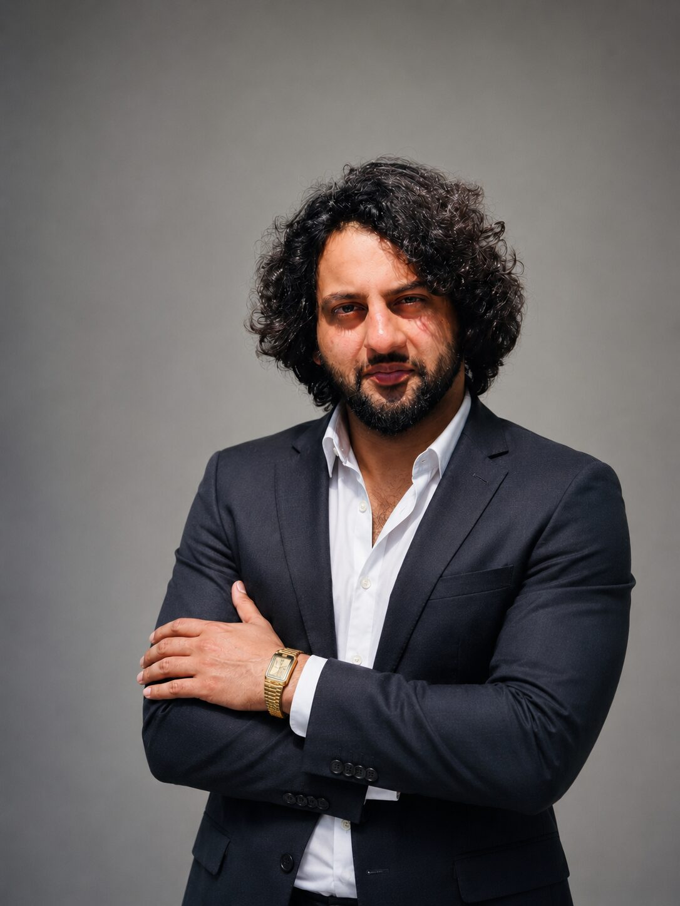

I studied Computer Science before I ever wrote a word of copy. That background still shapes how I work — I treat a campaign the way an engineer treats a system: find the actual problem, then build the smallest idea that solves it completely.
For the last five years I've been a copywriter, creative strategist, and campaign producer at Red FM 93.5 in Jammu — writing radio scripts, directing shoots, and sitting in the client meeting defending the idea, for brands from Coca-Cola to a state government. Alongside that, I've run a freelance practice managing full social pages end to end, launched an international radio brand in Bahrain, and self-funded a 1,500km solo winter motorcycle expedition through cold outreach and storytelling alone.
I also write Urdu poetry — eight years and counting, published under Fizool Baatein — and it shows up in the work more than you'd expect. The instinct that makes a couplet land is the same one that makes a 15-second radio spot stick.
M.I.E.T, Jammu
IGNOU
English (Professional) · Hindi (Native) · Urdu (Native — published poet, 8 years) · Dogri (Native)